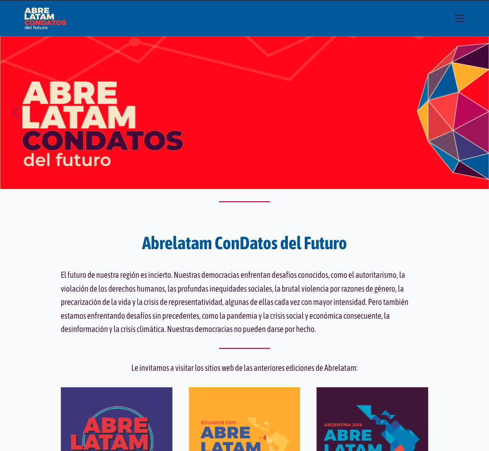

<div id="ajax-page" class="ajax-page-content">
    <div class="ajax-page-wrapper">
        <div class="ajax-page-nav">
            <div class="nav-item ajax-page-close-button">
                <a id="ajax-page-close-button" href="#"><i class="zmdi zmdi-close"></i></a>
            </div>
        </div>

        <div class="ajax-page-title">
            <h1>ConDatos & AbreLatam</h1>
        </div>

        <div class="row">
            <div class="col-sm-7 col-md-7 portfolio-block">
                <div class="portfolio-page-image">
                    
                </div>
            </div>

            <div class="col-sm-5 col-md-5 portfolio-block">
                <!-- Project Description -->
                <div class="block-title">
                    <h3>Description</h3>
                </div>
                <ul class="project-general-info">
                    <li>
                        <p><i class="fa fa-globe"></i> <a href="https://abrelatam.org/"
                                target="_blank">abrelatam.org</a></p>
                    </li>
                    <li>
                        <p><i class="fa fa-globe"></i> <a href="https://condatos.org/" target="_blank">condatos.org</a>
                        </p>
                    </li>
                    <li>
                        <p><i class="fa fa-calendar"></i> May 2017 - Mar 2019 </p>
                    </li>
                </ul>

                <p class="text-justify">ConDatos & AbreLatam is a conference that brings together experts from public
                    institutions, the private sector and civil society to present, discuss and propose key issues in
                    open data policy, open government, civic innovation, public challenges, privacy and new ways of
                    working with open data.</p>
                <!-- /Project Description -->

            </div>
        </div>
    </div>
</div>